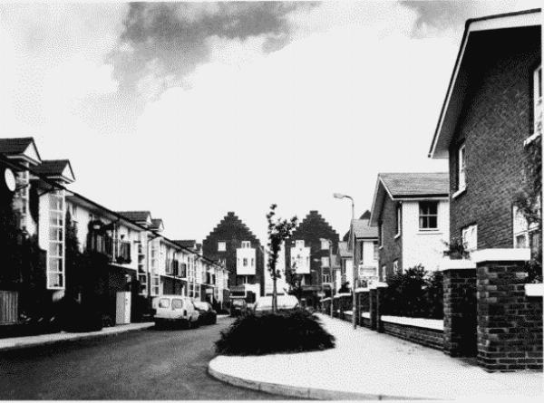
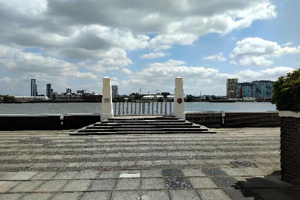

History

Compass Point Estate was developed in the 1980s, but before the Estate was built, the site was known as Dudgeons Wharf and started as J & W Dudgeon, shipbuilders from 1861 to 1875. The first ship they built was the 150-foot Flora, the first twin-screw steamer to cross the Atlantic Ocean. But they built a number of ships, some of which were used by the then newly formed Confederate States of America to penetrate the blockade imposed by the Union (ie the northern states).
Shipbuilding ceased in 1875, then in 1882, the site, still known as Dudgeons Wharf was used by oil and petrol merchants, who built extensive tank storage facilities. This use continued right up to 1951, when the site closed.
The site remained empty for many years before demolition work commenced. It was during this work that tragedy struck on 17th July 1969. There was an explosion and one worker and five firefighters sadly lost their lives. The memorial on the river marks this event.
Further details on the history can be found via these links.
- www.london-fire.gov.uk/news/2016-news/looking-back-at-the-dudgeons-wharf-disaster/
- https://islandhistory.wordpress.com/2014/02/13/dudgeons-wharf-you-couldnt-make-it-up/
The Compass Point development was then developed and constructed by Costain Homes in 1985–8, using a scheme initially drawn up by Jeremy Dixon of Jeremy Dixon-Building Design Partnership. Dixon's aim, both in the overall layout and the design of the individual groups of buildings at Compass Point, was to re-create the urban pattern of Georgian London 'in which formality and axiality are tempered by asymmetry and modesty of elevation'.
